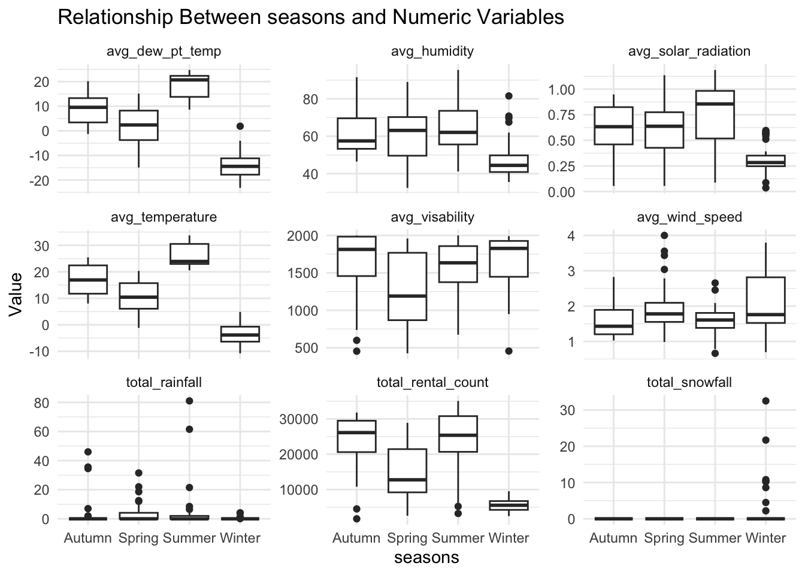
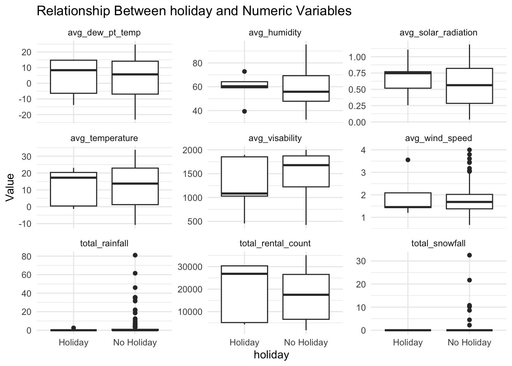
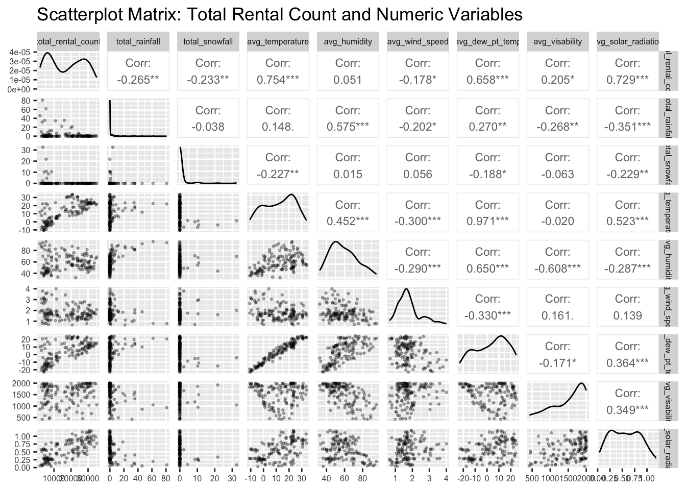
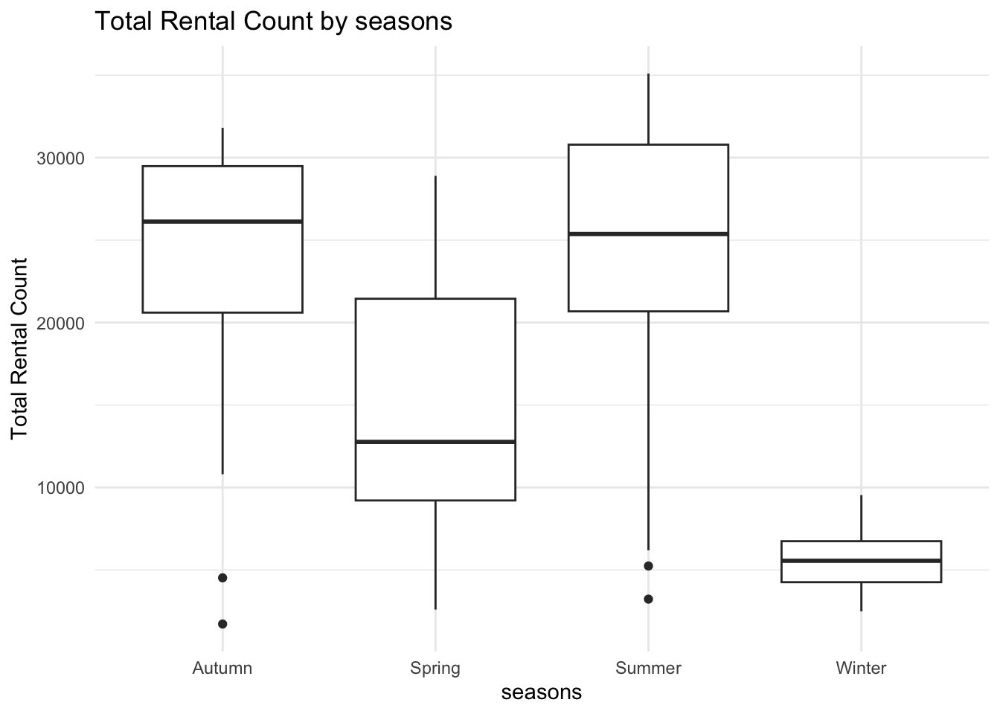
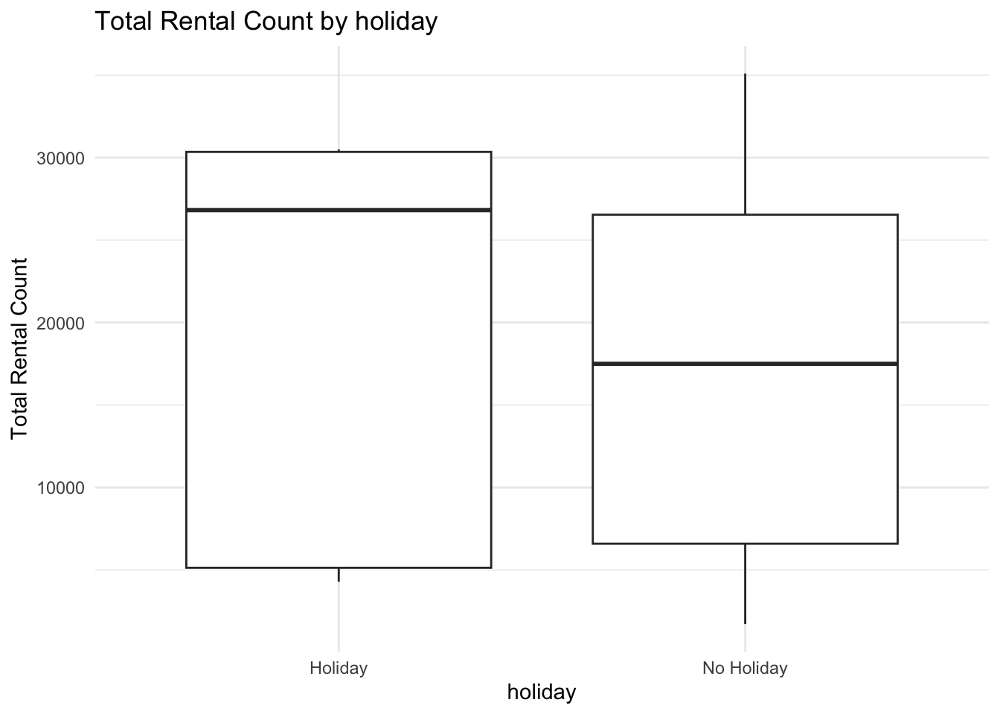

Rows: 8760 Columns: 14
── Column specification ────────────────────────────────────────────────────────
Delimiter: ","
chr (4): Date, Seasons, Holiday, Functioning Day
dbl (10): Rented Bike Count, Hour, Temperature(°C), Humidity(%), Wind speed ...
ℹ Use `spec()` to retrieve the full column specification for this data.
ℹ Specify the column types or set `show_col_types = FALSE` to quiet this message.
2. EDA
#1. Checking for missingnesssum(is.na(bikedata))
[1] 0
#no NAs #2. Checking the column types and valueshead(bikedata)
#all column types make sense, except the date-bikedata$Date <-mdy(bikedata$Date)
Warning: 5304 failed to parse.
summary(bikedata)
Date Rented Bike Count Hour Temperature(°C)
Min. :2017-01-12 Min. : 0.0 Min. : 0.00 Min. :-17.80
1st Qu.:2018-03-02 1st Qu.: 191.0 1st Qu.: 5.75 1st Qu.: 3.50
Median :2018-06-05 Median : 504.5 Median :11.50 Median : 13.70
Mean :2018-05-22 Mean : 704.6 Mean :11.50 Mean : 12.88
3rd Qu.:2018-09-08 3rd Qu.:1065.2 3rd Qu.:17.25 3rd Qu.: 22.50
Max. :2018-12-11 Max. :3556.0 Max. :23.00 Max. : 39.40
NA's :5304
Humidity(%) Wind speed (m/s) Visibility (10m) Dew point temperature(°C)
Min. : 0.00 Min. :0.000 Min. : 27 Min. :-30.600
1st Qu.:42.00 1st Qu.:0.900 1st Qu.: 940 1st Qu.: -4.700
Median :57.00 Median :1.500 Median :1698 Median : 5.100
Mean :58.23 Mean :1.725 Mean :1437 Mean : 4.074
3rd Qu.:74.00 3rd Qu.:2.300 3rd Qu.:2000 3rd Qu.: 14.800
Max. :98.00 Max. :7.400 Max. :2000 Max. : 27.200
Solar Radiation (MJ/m2) Rainfall(mm) Snowfall (cm) Seasons
Min. :0.0000 Min. : 0.0000 Min. :0.00000 Length:8760
1st Qu.:0.0000 1st Qu.: 0.0000 1st Qu.:0.00000 Class :character
Median :0.0100 Median : 0.0000 Median :0.00000 Mode :character
Mean :0.5691 Mean : 0.1487 Mean :0.07507
3rd Qu.:0.9300 3rd Qu.: 0.0000 3rd Qu.:0.00000
Max. :3.5200 Max. :35.0000 Max. :8.80000
Holiday Functioning Day
Length:8760 Length:8760
Class :character Class :character
Mode :character Mode :character
#numeric columns are fine, categoricals need converted to factorsbikedata <- bikedata %>%mutate(across(where(is.character), as.factor))lapply(bikedata[sapply(bikedata, is.factor)], table)
$Seasons
Autumn Spring Summer Winter
2184 2208 2208 2160
$Holiday
Holiday No Holiday
432 8328
$`Functioning Day`
No Yes
295 8465
#filtering dataset on functioning days onlybikedata <- bikedata %>%filter(functioning_day =="Yes")#summarize across the hoursbikedata_summary <- bikedata %>%group_by(date, seasons, holiday) %>%summarize(#summing rental count, rainfall, and snowfalltotal_rental_count =sum(rental_count, na.rm =TRUE),total_rainfall =sum(rainfall, na.rm =TRUE),total_snowfall =sum(snowfall, na.rm =TRUE),#calculate mean for other weather-related variables (temperature, dew_pt_temp, humidity, wind_speed, visability, solar_radiation)avg_temperature =mean(temperature, na.rm =TRUE),avg_humidity =mean(humidity, na.rm =TRUE),avg_wind_speed =mean(wind_speed, na.rm =TRUE),avg_dew_pt_temp =mean(dew_pt_temp, na.rm =TRUE),avg_visability =mean(visability, na.rm =TRUE),avg_solar_radiation =mean(solar_radiation, na.rm =TRUE) ) %>%ungroup()
`summarise()` has grouped output by 'date', 'seasons'. You can override using
the `.groups` argument.
#Basic summary stats with new data summary(bikedata_summary)
date seasons holiday total_rental_count
Min. :2017-01-12 Autumn:32 Holiday : 9 Min. : 1721
1st Qu.:2018-03-01 Spring:36 No Holiday:135 1st Qu.: 6668
Median :2018-06-04 Summer:38 Median : 18824
Mean :2018-05-20 Winter:38 Mean : 42863
3rd Qu.:2018-09-06 3rd Qu.: 27670
Max. :2018-12-11 Max. :1372602
NA's :8
total_rainfall total_snowfall avg_temperature avg_humidity
Min. : 0.000 Min. : 0.000 Min. :-10.767 Min. :32.42
1st Qu.: 0.000 1st Qu.: 0.000 1st Qu.: 1.167 1st Qu.:48.64
Median : 0.000 Median : 0.000 Median : 14.029 Median :56.92
Mean : 8.766 Mean : 4.567 Mean : 12.433 Mean :58.67
3rd Qu.: 1.625 3rd Qu.: 0.000 3rd Qu.: 22.899 3rd Qu.:68.67
Max. :359.100 Max. :411.700 Max. : 33.742 Max. :95.42
avg_wind_speed avg_dew_pt_temp avg_visability avg_solar_radiation
Min. :0.6625 Min. :-23.171 Min. : 425 Min. :0.03583
1st Qu.:1.3781 1st Qu.: -6.747 1st Qu.:1206 1st Qu.:0.28635
Median :1.6646 Median : 5.835 Median :1656 Median :0.56604
Mean :1.7963 Mean : 3.829 Mean :1524 Mean :0.56739
3rd Qu.:2.0115 3rd Qu.: 14.293 3rd Qu.:1873 3rd Qu.:0.79844
Max. :4.0000 Max. : 24.746 Max. :2000 Max. :1.18708
sum(is.na(bikedata_summary))
[1] 8
#get rid of the na's bikedata_summary<- bikedata_summary%>%drop_na()#correlation matrix between the numeric variables bike_numeric <- bikedata_summary[sapply(bikedata_summary, is.numeric)]cor(bike_numeric)
There are some obvious/expected correlations just due to this being a lot of weather data, such as a positive correlation between humidity and rainfall. Something I think is interesting is the positive correlation between dew pt. and total rental count (I hate a humid day) but again that’s probably just because, as we see, dew pt. has almost a completely positive correlation with temperature (0.97)
categorical_vars <-c("seasons","holiday")numeric_vars <-names(bike_numeric)#Loop through each categorical variable to create a plotfor (cat_var in categorical_vars) { long_data<- bikedata_summary %>%select(all_of(c(cat_var,numeric_vars))) %>%pivot_longer(cols =all_of(numeric_vars), names_to ="numeric_variable", values_to ="value")#plot plot <-ggplot(long_data, aes_string(x = cat_var, y ="value")) +geom_boxplot() +facet_wrap(~ numeric_variable, scales ="free_y") +labs(title =paste("Relationship Between", cat_var, "and Numeric Variables"),x = cat_var,y ="Value" ) +theme_minimal()# Print the plotprint(plot)}
Warning: `aes_string()` was deprecated in ggplot2 3.0.0.
ℹ Please use tidy evaluation idioms with `aes()`.
ℹ See also `vignette("ggplot2-in-packages")` for more information.


The relationship between snow and rainfall and whether it’s a holiday or not is weird! Other than that, there isn’t anything way out of the ordinary.
#Looking at how total rent count relates to the other variables #with numeric variables using GGally package ggpairs(bike_numeric, title ="Scatterplot Matrix: Total Rental Count and Numeric Variables",#first time I printed everything was way too big for screen lower =list(continuous =wrap("points", size =0.5, alpha =0.3)), #adjust point size for each scatter plot upper =list(continuous =wrap("cor", size =3)) #adjust size of the corr. statistics in each box ) +theme(axis.text =element_text(size =6), #smaller axis labels strip.text =element_text(size =6) #smaller facet labels )

#with categorical variables for (cat_var in categorical_vars) {#boxplot for each categorical variable plot <-ggplot(bikedata_summary, aes_string(x = cat_var, y ="total_rental_count")) +geom_boxplot() +labs(title =paste("Total Rental Count by", cat_var),x = cat_var,y ="Total Rental Count" ) +theme_minimal()#print the plotprint(plot)}


These both makes logistical sense.
3. Splitting the data
#split the data into training (75%) and testing (25%) sets, stratified by 'seasons'set.seed(123) # Set a seed for reproducibilitybike_split <-initial_split(bikedata_summary, prop =0.75, strata = seasons)#extract the training and testing setstrain_data <-training(bike_split)test_data <-testing(bike_split)#on the training data, create a 10-fold CV split cv_split <-vfold_cv(train_data, v =10, strata = seasons)#checking the structure of the cross-validation splitscv_split
Here, we will also fit the models using 10-fold cross-validation to determine the best model.
#Recipe #1 ---------------#fixing the date columnbike_1_recipe <-recipe(total_rental_count ~ ., data = bikedata_summary) %>%#extract the day of the week from the date variablestep_date(date, features ="dow", label =TRUE) %>%#create a new factor variable 'weekday_weekend'step_mutate(weekday_weekend =factor(if_else(date_dow %in%c("Sat", "Sun"), "Weekend", "Weekday")) ) %>%#remove the intermediate 'dow' variable and the original 'date' variablestep_rm(date_dow, date) %>%#standardize numeric vars step_normalize(all_numeric()) %>%#dummy variables step_dummy(all_nominal_predictors())#prepare and bake the recipefirst_recipe<-prep(bike_1_recipe)bike_1_recipe
#Set up linear model fit to use the 'lm' engine recipe_model<-linear_reg() %>%set_engine("lm")#create recipe workflows recipe_1_wfl <-workflow() %>%add_recipe(bike_1_recipe) %>%add_model(recipe_model)recipe_1_wfl
The RMSE metric of the test set is 0.301. The R-squared value is 0.91, meaning the model explains 91% of the variance in the total_rental_count. The coefficient table shows each coefficient/estimate for the predictors in the model.